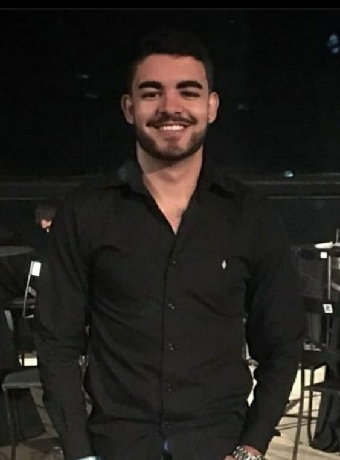

Olá, muito prazer, eu sou o Lucas Carrilho.
Tenho 27 anos e sou natural de Juiz de Fora, Minas Gerais. Faço parte atualmente do Movimento Codar 2022 realizado pela empresa Bluesoft Sistemas, além disso, estou em um processo de mudança de área, saindo do meio jurídico para o tecnológico.
Meu objetivo atual é conseguir uma oportunidade na área de programação, e estou estudando as seguintes tecnologias: Java, Javascript, HTML, CSS e Go.
Sou um profissional estudioso, dedicado e disposto a encarar qualquer desafio profissional em busca de crescimento, buscando sempre agregar a equipe com soluções ágeis e eficazes.
Possuo inglês de nível básico (escrita e leitura avançados, com a pronúncia intermediária) .
Minha cidade atual
Juiz de Fora - Minas Gerais